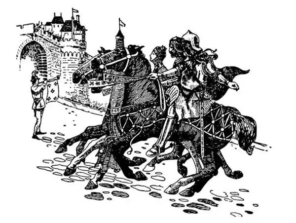
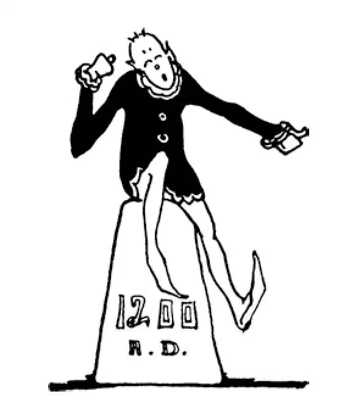

54
Tick-Tack-Toe; Three Kings in a Row
画“连城”游戏，三个国王成一行

HERE are three kings:
Richard of England,
Philip of France, and
Frederick Barbarossa of Germany.
If you say their names over several times, they keep ringing through your mind and you can't seem to stop thinking them whether you want to or not.
Jerusalem was captured. But it didn't stay captured very long. Muslims attacked and won it back again.
The Christians started a Second Crusade. Thereafter about once in a lifetime during the next two hundred years there was one Crusade after another—eight or nine in all. Sometimes these later Crusades won back Jerusalem for a while, but for a while only. Sometimes they did not succeed at all.

Richard of England, Philip of France, and Frederick Barbarossa
英国的理查、法国的腓力和腓特烈·巴巴罗萨
The Third Crusade took place about a hundred years after the first; that is, nearly 1200 A.D. These three kings—Richard of England, Philip of France, and
Frederick Barbarossa—started on the Third Crusade. But they didn't all finish. I'll tell you about them in three-two-one-order.
Frederick's name, Barbarossa, meant Red Beard, for in those days it was the custom to give kings nicknames that described them. Frederick's capital was in Aix-la-Chapelle, as Charlemagne's had been, but Frederick was king only of Germany. When a young man, he had tried to make his country as large and powerful as the new Roman Empire that Charlemagne had made. But he was not a great enough man, and so was unable to do what Charlemagne had done. Frederick was quite old when he started out on the Third Crusade with the other two kings. But he never reached Jerusalem, for in crossing a stream on the way, he was drowned. So much for Frederick, the third king.
The second king, Philip of France, was jealous of the first king, Richard, because Richard was so very popular and well liked by the Crusaders. Philip finally gave up the Crusade and went back to France.
Richard of England was then the only king left on the Crusade. It would have been better if he, too, had gone back to his country instead of gallivanting off on a Crusade. But he thought going on a Crusade was much better sport than staying at home and working over the difficult business of governing his people.
Richard was kind and gentle, yet strong and brave. Richard the Lion-Hearted they called him. He was hard on wrongdoers but fair and square. People loved him, but they feared him, too, for he punished the wicked and those who misbehaved.
Even Richard's enemies admired him. The Muslim king of Jerusalem at the time of this Third Crusade was named Saladin. Saladin, though being attacked by Richard, admired him very much and even became his friend. So Saladin, instead of fighting Richard, finally made a friendly agreement with him to treat the Holy Sepulcher and the pilgrims properly. As this arrangement was satisfactory to everyone, Richard left Jerusalem to Saladin and started back home.
On his way home Richard was captured and put in prison by the son of Frederick Barbarossa and held for a large ransom from England. Richard's friends did not know where he was and did not know how to find him.
Now, it so happened that Richard had a favorite minstrel named Blondel. Blondel had composed a song of which Richard was very fond. When Richard was taken prisoner, Blondel wandered over the country singing everywhere this favorite song in the hope that Richard might hear it and reveal where he was. One day he happened to sing beneath the very tower where Richard was imprisoned. Richard heard him and answered by singing the refrain of the song. His friends then knew where he was, the ransom was paid, and Richard was allowed to go free.
When, at last, Richard did reach England, he still had adventures. This was the time when Robin Hood was robbing travelers. Richard planned to have himself taken prisoner by Robin Hood, so that he might capture him and bring him to justice. Richard disguised himself as a monk and was captured as he had planned. But he found Robin Hood such a good fellow after all that he forgave him and his men.
Richard's coat of arms was a design of three lions, one above the other; and this same design of three lions now forms part of the shield of England.
After Richard's Crusade, there was a Fourth Crusade, and then in the year 1212—which is an easy date to remember, because it is simply the number 12 repeated one, two, one, two there was a crusade of children only. This was known therefore as the Children's Crusade. It was led by a French boy about twelve years old named Stephen, who was named after the first Christian martyr.
Children from all over France left their homes and their mothers and fathers—it seems strange to us that their mothers and fathers let them start off on such a trip—and marched south to the Mediterranean Sea. Here they expected the waters of the sea would part and allow them to march on dry land to Jerusalem, as they had read in the Bible the waters of the Red Sea had done to allow the Israelites to leave Egypt. But the waters did not part.
Some sailors, however, offered to take the children to Jerusalem in their ships. They said they would do it for nothing, just for the love of the Lord. But it turned out that these sailors were really pirates, and as soon as they got the children on board their ships they steered them straight into the very land of their enemies, the Muslims. Here, it is said, the pirates sold the children as slaves. This is not a Grimm's fairy tale, and the pirates were not trapped by the children, so I cannot make a happy ending, for it was not.
The last or Eighth Crusade was led by a king of France called Louis. He was so pious and so devoted to the Lord that he was made a saint and ever after has been called St. Louis. Yet this Crusade failed, and ever since that time Jerusalem was ruled by Muslims until, in 1918, it was captured by the English, who kept it until 1948 when the state of Israel was established. Now, both Israeli Jews and Palestinians—Muslim and Christian—want control of the Holy City. It's very sad that this city that is so sacred to Jews, Christians, and Muslims is always at the center of a war.
Not all the Crusaders were good Christians. Like some people nowadays, a great many were Christian only in name. In fact, though strange to say, quite a number of the Crusaders were nothing but scalawags, looking for excitement and adventure, and they went on a Crusade merely as an excuse to rob and plunder.
The Crusades did not succeed in their object, which was to keep Jerusalem for the Christians. In spite of that, the Crusades did a great deal of good. When the Crusades first started, the Crusaders were not nearly as civilized as the people they went to conquer. But travel sometimes teaches people more than books, and it taught the Crusaders. They learned the customs of the other lands through which they went. They learned languages and literature. They learned history and art.
There were then no public schools. Only a very, very few people had any education at all. The Crusades then did what schools might have done. They taught the people of Europe and opened up to them a whole new world of culture and knowledge.
【中文阅读】
有三个国王：
英国的理查，
法国的腓力，
德国的腓特烈·巴巴罗萨。
如果你把他们的名字反复多念几遍，这些名字就会萦绕在你的脑海里，似乎怎么都挥之不去。
耶路撒冷被基督徒占领了。但是好景不长。穆斯林发起进攻又把它夺了回去。
基督徒开始了第二次十字军东征。此后的二百年里，百年一遇的事发生了，他们发起了一次接一次的十字军东征——总共有八九次。有时，这些后来的十字军会把耶路撒冷夺过来，但都好景不长。有时，他们则一败涂地。
第三次十字军东征发生在第一次十字军东征后大约100年左右，就是差不多公元1200年。这三个国王——英国的理查，法国的腓力和腓特烈·巴巴罗萨——开始了第三次十字军东征。但是他们并没有都完成这次征战。我将按照从后往前的顺序先讲腓特烈国王的故事，然后再讲其他两位国王。
腓特烈的名字，巴巴罗萨，意思是红胡子，因为给国王起个生动的绰号来描述他们是当时的风俗。腓特烈国王的首都在亚琛，查理曼也曾在那里建都，但是腓特烈只是德国的国王。腓特烈年轻力壮的时候，也想让他的国家像查理曼的新罗马帝国那样庞大、强盛。可是他还不够英明神武，所以成就不了查理曼那样的丰功伟业。他和其他两位国王发动第三次十字军东征的时候，年纪已经很大了。不过他从未抵达耶路撒冷，因为半路上过一条小河时他掉进河里淹死了。这就是第三个国王腓特 烈的情况。
第二个国王，法国的腓力非常嫉妒第一个国王理查，因为理查深受十字军战士的爱戴。最终腓力中途放弃了，回法国去了。
这样这次十字军东征途中只剩下英国的理查这唯一的国王了。如果当时他也回到自己的国家去，而不是随十字军东游西逛，可能会更好。但是他认为比起待在国内处理棘手的内政问题，参加十字军东征倒是更省心的活动。
理查善良而温和，但是强壮而英勇。人们都叫他“狮心王理查”。他对作恶者的惩罚毫不手软但却能做到公正公平。人们爱戴他，但是同时也敬畏他，因为他疾恶如仇，对坏人严加惩处。
甚至理查的敌人都钦佩他。在第三次十字军东征时，耶路撒冷的穆斯林国王名叫萨拉丁。尽管萨拉丁受到理查的攻击，却非常佩服他，甚至和他成了朋友。所以萨拉丁没有和理查交战，而是最终和他达成了友好协议，答应以后要爱护圣墓，对朝圣者也以礼相待。既然对这样的安排大家都很满意，理查也就放心地把耶路撒冷交给了萨拉丁，踏上回家的旅途。
在回家的路上，理查被腓特烈·巴巴罗萨的儿子抓了起来，关进了监狱，并被扣为人质向英国索要一大笔赎金。理查的朋友们不知道他在哪里，也不知道怎么找到他。
碰巧理查有一个宠爱的吟游诗人名叫布隆德尔。布隆德尔曾创作了一首歌，理查非常喜欢。理查被关起来的时候，布隆德尔在全国游荡，到处吟唱这首理查喜爱的歌，希望理查能听到，并透露他在哪里。一天，他正好就在理查被关的那座监狱高塔下吟唱。理查听到他的歌声，就哼唱起这首歌的副歌作为回应。于是查理的朋友们就知道他被关押的地方，付了赎金，理查被放出来了。
最后理查终于回到英国，回来后他依然继续冒险。那时候大盗罗宾汉经常抢劫路上的旅客。理查设计让自己被罗宾汉俘获，再趁机抓住罗宾汉，将他绳之以法。理查乔装成僧侣，正如预谋的那样被抓了。但是他发现罗宾汉终究是个好汉子，就宽恕了他和他的手下。
理查的盾形徽章是三只狮子的图案，三只狮子从上到下依次排列；现在代表英国的盾形徽章上面还有部分图案和这个图案一模一样。
在理查的十字军东征后，又有了第四次十字军东征，之后在公元1212年——这个年代容易记住，因为它只是数字12的重复——1，2，1，2——有了一次只有孩子们参加的十字军东征。这就是所谓的儿童十字军。由一个大约12岁的法国男孩率领，他的名字叫司提反，是以第一个基督教殉道士的名字取名的。
法国各地的孩子离开了家，离开了父母——而他们的父母竟然同意他们出发进行这样的远征，对我们来说真是不可思议——向南行军到地中海。在海边他们期望海水会向两旁分开，让他们从海中露出的干地穿行过去到达耶路撒冷，就像他们在圣经里读到的那样，红海海水分开，让以色列人离开埃及。但是海水并没有分开。
不过有些水手主动提出用船把孩子们送到耶路撒冷。他们说这样做不求任何回报，只是出于对上帝的爱。可孩子们上船后就发现这些水手其实是海盗，一把孩子 们抓上船，他们就把船直接开到十字军的敌人穆斯林的地盘。据说到那儿后，海盗把这些孩子们卖给敌人做奴隶。如果在《格林童话》里，海盗会被孩子们设的陷阱困住，可是现实毕竟不是童话，所以我也没法编一个美满的结局。
最后一次也就是第八次十字军东征是由法国国王路易率领的。他非常虔诚，把自己的全部都奉献给上帝，所以他死后被封为圣徒，从此以后就被称为圣路易。但是这次十字军东征还是失败了，从那时起耶路撒冷一直由穆斯林统治，直到1918年被英国人夺回，从1918年到1948年以色列建国之前，耶路撒冷一直由英国人掌控。现在，以色列犹太人和巴勒斯坦人——穆斯林和基督徒——都想控制这座圣城。令人感到遗憾的是：这座对犹太人、基督徒和穆斯林来说都异常神圣的城市却始终处于战争的中心。
并不是所有的十字军战士都是善良的基督徒。就像如今有些人一样，那时很多人不过名义上是基督徒。事实上，尽管说来奇怪，相当多的十字军战士只是寻求刺激和冒险的恶棍，说穿了他们就是打着十字军东征的名号来烧杀抢掠罢了。
十字军东征没有实现原来的目标，为基督徒保住耶路撒冷。尽管如此，十字军东征确实也有很多益处。十字军东征刚开始时，十字军战士的文明程度远不如他们前去征服的人们。可是有时游历比书本让人学到更多的东西，长途征战让十字军战士增长了知识。他们知道了沿途各地的风俗习惯，熟悉了多种语言和文学，也学到了历史和艺术。
那时还没有公立学校。只有很少的人接受教育。十字军东征在当时正是起到了学校的作用。它让欧洲人增长了见识，也为他们打开了一个全新的文化和知识的世界。

公元1200年